. Esse conjunto de valores
para 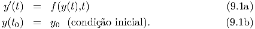 será denotado por 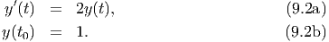, isto é 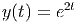 e calculamos o valor
aproximado da função solução 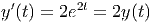 em cada ponto da malha usando esquemas
numéricos.
. Esse conjunto de valores
para 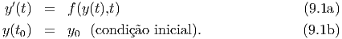 será denotado por 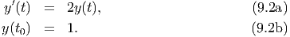, isto é 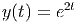 e calculamos o valor
aproximado da função solução 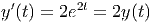 em cada ponto da malha usando esquemas
numéricos.
Neste capítulo, desenvolveremos técnicas numérica para aproximar a solução de problemas de valor inical da forma
A ingógnita de um problema de valor inicial é uma função que satisfaz a equação diferencial (8.1a) e a condição inicial (8.1b).
Exemplo 8.0.1. Considere o seguinte problema de valor inicial
A solução desta equação é dada pela função 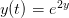 pois 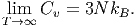 e .
Muito problemas de valor inicial da forma (8.1) não podem ser resolvidos exatamente, ou seja, sabe-se que a solução existe e é única, porém não podemos expressá-la em termos de funções elementares. Por isso é necessário calcular aproximações numéricas. Diversos métodos completamente diferentes estão disponíveis para aproximar uma função real.
Aqui nos limitaremos a estudar métodos que se fundamentam em tentar
calcular 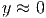 em um conjunto finito de valores de . Esse conjunto de valores
para 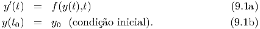 será denotado por 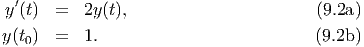, isto é 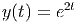 e calculamos o valor
aproximado da função solução 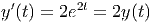 em cada ponto da malha usando esquemas
numéricos.